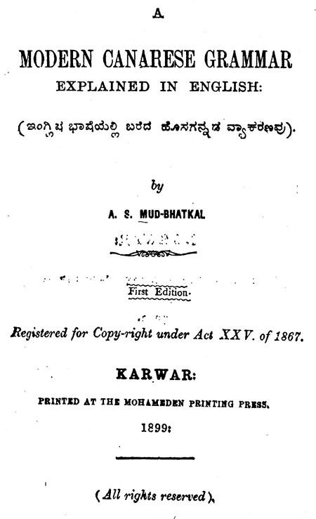

ಇಂಗ್ಲಿಷ್ ಭಾಷೆಯಲ್ಲಿ ಹೊಸಗನ್ನಡ ವ್ಯಾಕರಣ
ಕಾರವಾರದ ಪ್ರೌಢಶಾಲೆಯೊಂದರಲ್ಲಿ ಶಿಕ್ಷಕರಾಗಿದ್ದ ಎ.ಎಸ್. ಮೂಡ ಭಟ್ಕಳರು ‘ಇಂಗ್ಲಿಷ್ ಭಾಷೆಯಲ್ಲಿ ಬರೆದ ಹೊಸಗನ್ನಡ ವ್ಯಾಕರಣವು’ (A Modern Canarese Grammar explained in English) ಎನ್ನುವ ಕನ್ನಡ ವ್ಯಾಕರಣ ಗ್ರಂಥದ ಮೊದಲ ಆವೃತ್ತಿಯನ್ನು 1899ರಲ್ಲಿ ಪ್ರಕಟಿಸಿದರು.
1867ರ ಗ್ರಂಥಸ್ವಾಮ್ಯ ಕಾನೂನಿನ 25ನೇ ಕಲಮಿನ ಮೇರೆಗೆ ಈ ಕೃತಿಯು ನೋಂದಣಿಯಾಗಿದೆ. ಬೆಲೆ ನಮೂದಾಗದ 277+13 ಪುಟಗಳ ಈ ಕೃತಿಯು ಕಾರವಾರದ ಮೊಹಮ್ಮಡನ್ ಪ್ರಿಂಟಿಂಗ್ ಪ್ರೆಸ್ಸಿನಲ್ಲಿ ಅಚ್ಚಾಗಿದೆ. ವಿಲಿಯಂ ಕ್ಯಾರಿ, ಜಾನ್ ಮೆಕೆರಲ್, ಥಾಮಸ್ ಹಾಡ್ಸನ್, ಹೆರಾಲ್ಡ್ ಸ್ಪೆನ್ಸರ್, ತ್ಸೀಗ್ಲರ್, ರೆ.ಎಫ್. ಕಿಟೆಲ್ ಮುಂತಾದವರು ಕನ್ನಡ ವ್ಯಾಕರಣವನ್ನು ಇಂಗ್ಲಿಷ್ ಭಾಷೆಯಲ್ಲಿ ಬರೆದ ವಿದೇಶೀ ವಿದ್ವಾಂಸರು. ಶ್ರೀರಂಗಪಟ್ಟಣದ ಕೃಷ್ಣಮಾಚಾರ್ಯ, ದಕ್ಷಿಣಾ ಮೂರ್ತಿ ಶಾಸ್ತ್ರೀ, ಎಂ.ರಾಮಸ್ವಾಮಿ, ರಾ.ರಘುನಾಥರಾಯ ಮುಂತಾದವರು ಕನ್ನಡದಲ್ಲಿಯೇ ಕನ್ನಡ ವ್ಯಾಕರಣವನ್ನು ರಚಿಸಿದ ದೇಸೀ ವಿದ್ವಾಂಸರು. ರೆ.ಎಫ್. ಕಿಟೆಲ್ ಹಾಗೂ ಕಾಲಿನ್ಸ್ ಕ್ಯಾಂಪ್ಬೆಲ್ (ಕೇಂಬಲ್ ಅಯ್ಯ) ಅವರು ಕನ್ನಡದಲ್ಲಿ ಕನ್ನಡ ವ್ಯಾಕರಣವನ್ನು ಬರೆದ ವಿದೇಶೀ ಪಂಡಿತರು. ಎ.ಎಸ್. ಮೂಡ ಭಟ್ಕಳರಾದರೋ ಇಂಗ್ಲಿಷ್ ಭಾಷೆಯಲ್ಲಿ ಕನ್ನಡ ವ್ಯಾಕರಣ ಗ್ರಂಥವನ್ನು ಬರೆದ ದೇಸೀ ಧೀಮಂತರು.
ಪ್ರಸ್ತಾವನೆ, ಬಳಸಿಕೊಂಡ ಹಿಂದಿನ ಗ್ರಂಥಗಳ ಪಟ್ಟಿ, ಪರಿವಿಡಿ, ಪಠ್ಯ, ಅನುಬಂಧಗಳು, ತಿದ್ದುಪಡಿ, ವಿದ್ವಾಂಸರ ಅಭಿಪ್ರಾಯಗಳು ಎನ್ನುವ ಅಂಶಗಳನ್ನೊಳಗೊಂಡಿರುವ ಈ ಪುಸ್ತಕದಲ್ಲಿ– ಅಕ್ಷರ ಖಂಡ, ಶಬ್ದ ಖಂಡ ಹಾಗೂ ವಾಕ್ಯ ಖಂಡ ಎನ್ನುವ ಮೂರು ಪ್ರಮುಖ ಅಧ್ಯಾಯಗಳೂ, 17 ಇತರ ಅಧ್ಯಾಯಗಳೂ ಇವೆ. ತಾವು ಬಳಸಿಕೊಂಡಿರುವ ಪುಸ್ತಕಗಳಲ್ಲಿ ಟಿ.ಎಸ್. ಮಾಬೆನ್ ಅವರ ‘ವ್ಯಾಕರಣ ಬೋಧಿನಿ’, ಬಾಸೆಲ್ ಮಿಷನ್ ಪ್ರೆಸ್ನ ಪ್ರಕಟಣೆಯಾದ ‘ಲೋಕೋಕ್ತಿ ನಿಧಾನ’, ಡಿ.ಎನ್.ಮುಳಬಾಗಿಲು ಅವರ ‘ಕನ್ನಡ ಕಯ್ಪಿಡಿ’ ಮುಂತಾದ ಅಪರೂಪದ ಪುಸ್ತಕಗಳಿವೆ.
370 ಅಂಶಗಳನ್ನು ಒಳಗೊಂಡಿರುವ ಈ ಕೃತಿಯ ಪ್ರಿಫೇಸಿನಲ್ಲಿ ಲೇಖಕರು ಈ ಕೃತಿರಚನೆಗೆ ಕಾರಣವನ್ನು ಹೀಗೆ ಪ್ರಸ್ತುತಿ ಪಡಿಸುತ್ತಾರೆ: The main object in writing the following pages is to place in the hands of the students of Canarese, reading for the Matriculation, Bombay University School Final, Public Service and such other examinations, at which they are required to solve their Canarese Paper in English, a text-book of the Modern Canarese Grammar explained in simple and clear English. The treatise is also intended to supply the long felt want of a suitable and comprehensive hand-book of grammar to the foreign learners of the modern dialect of this Dravidian Language. ಲೇಖಕರೇ ಹೇಳುವಂತೆ ಇದು ಕನ್ನಡ ವ್ಯಾಕರಣ ಪತ್ರಿಕೆಯ ಪ್ರಶ್ನೆಗಳಿಗೆ ಇಂಗ್ಲಿಷಿನಲ್ಲಿ ಉತ್ತರ ಬರೆಯಬೇಕಾದ ಮುಂಬಯಿ ವಿಶ್ವವಿದ್ಯಾಲಯದ ಮೆಟ್ರಿಕ್ಯುಲೇಷನ್ ವಿದ್ಯಾರ್ಥಿಗಳಿಗಾಗಿ ಮತ್ತು ವಿದೇಶೀ ಹಾಗೂ ಕನ್ನಡೇತರ ಕನ್ನಡ ಕಲಿಕಾಪೇಕ್ಷೀ ವಿದ್ಯಾರ್ಥಿಗಳ ಉಪಯೋಗಕ್ಕಾಗಿ ರಚಿತವಾಗಿದೆ.
Canarese ಶಬ್ದರೂಪದ ವ್ಯುತ್ಪತ್ತಿಯನ್ನು ಕುರಿತು ಪ್ರಿಫೇಸಿನ ಅಡಿಟಿಪ್ಪಣಿಯಲ್ಲಿ The word Canarese was derived from Canara (ಕನಡಾ) which is a modification of Kannada (ಕನ್ನಡ=ಕರ್+ನಾಡು) literally ‘Black Country’. The present tendency is to use the original word Kannada instead of the anglicized name Canarese. Again some Pundits suggest that Kanarese is the proper spelling ಎನ್ನುವ ಅನನ್ಯ ಮಾಹಿತಿಯೊಂದನ್ನು ನೀಡುತ್ತಾರೆ.
ಪುಸ್ತಕರಚನೆಯ ಸಂದರ್ಭದಲ್ಲಿ ತಮಗೆ ನೆರವು ನೀಡಿದ ಕಾರವಾರದ ಪ್ರೌಢಶಾಲೆಯ ಸಹಾಯಕ ಅಧ್ಯಾಪಕರಾಗಿದ್ದ ಶಂಕರ ನಾರಾಯಣ ಕೊಪ್ಪಿಕರ್ ಎನ್ನುವ ಗೆಳೆಯರನ್ನು ಸ್ಮರಿಸಿಕೊಂಡಿದ್ದಾರೆ. ಪುಸ್ತಕದ ಅನುಬಂಧದಲ್ಲಿ ಸಂಸ್ಕೃತದ ತತ್ಸಮ-ಕನ್ನಡದ ತದ್ಭವಗಳ 2600 ಶಬ್ದಗಳ ಪಟ್ಟಿ, ವಿರಾಮ ಚಿನ್ಹೆಗಳನ್ನು ಕುರಿತ ವಿವರಣೆ, ಕನ್ನಡದಲ್ಲಿ ವ್ಯಾಕರಿಸುವ ಪದ್ಧತಿ ಹಾಗೂ 1883ರಿಂದ 1898ರ ಅವಧಿಯ ಬೊಂಬಯಿ ವಿಶ್ವವಿದ್ಯಾಲಯದ ಪ್ರಶ್ನಪತ್ರಿಕೆ, 1890ರಿಂದ 1898ರ ಅವಧಿಯ ಸೆಕೆಂಡ್ ಗ್ರೇಡ್ ಪಬ್ಲಿಕ್ ಸರ್ವೀಸ್ ಸರ್ಟಿಫಿಕೇಟ್ ಎಕ್ಸಾಮಿನೇಷನ್ಗಳ ಆಯ್ದ ಪ್ರಶ್ನೆಗಳ ಸರಣಿಯನ್ನು ನೀಡಿರುವುದು ವಿದ್ಯಾರ್ಥಿಗಳಿಗೆ ತುಂಬಾ ಉಪಯುಕ್ತವಾಗಿದೆ. ಉದಾಹರಣೆಗಾಗಿ ಒಂದೆರಡು ಪ್ರಶ್ನೆಗಳನ್ನು ಗಮನಿಸಬಹುದು. 1. Name and Classify the different kinds of Pronouns in the Canarese Language 2. How are passive verbs formed in the Karnataka Language? 3. Name and dissolve the following compounds– ಬೆಳ್ದಾವರೆ, ಚಂದ್ರಮುಖಿ, ಹುಟ್ಟುಗುರುಡ, ಅರಸುಕುಮಾರ, ಒಕ್ಕಟ್ಟು.
ವ್ಯಾಕರಿಸುವ ಪದ್ಧತಿ ಎಂದರೆ ಒಂದು ವಾಕ್ಯವನ್ನು ನೀಡಿದಾಗ ಆ ವಾಕ್ಯದ ಎಲ್ಲ ಪದಗಳ ವ್ಯಾಕರಣೀಯ ಗುಣ–ಲಕ್ಷಣಗಳನ್ನು ತಿಳಿಸಿಕೊಡುವುದು. ಇಲ್ಲಿ ನಿದರ್ಶನಕ್ಕಾಗಿ ಲೇಖಕರು ವಿವರಿಸಿರುವ ಒಂದು ವಾಕ್ಯದ ವ್ಯಾಕರಿಸುವ ಕ್ರಮವನ್ನು ಗಮನಿಸಬಹುದು. ಲೇಖಕರೇ ನೀಡಿರುವ ಆ ದೃಷ್ಟಾಂತ ಇಂತಿದೆ: 370. The following are models of parsing Canarese words. Many words are variously parsed in different books on Canarese Grammar. However, the method found common in most of the treatises is adopted here. 1. ನಿನ್ನೆ ಶಾಲೆಯಲ್ಲಿ ಶಿಕ್ಷಕನು ರಾಮನಿಗೆ ಸಣ್ಣ ಕೋಲಿನಿಂದ ಚನ್ನಾಗಿ ಒಂದು ಪೆಟ್ಟನ್ನು ಕೈಮೇಲೆ ಹೊಡೆದನು. ಈ ವಾಕ್ಯದಲ್ಲಿ ಶಿಕ್ಷಕನು ಕರ್ತೃ, ಪೆಟ್ಟನ್ನು ಕರ್ಮ, ಹೊಡೆದನು ಕ್ರಿಯಾಪದ, ಸಕರ್ಮಕ ಕರ್ತರಿಪ್ರಯೋಗ. ನಿನ್ನೆ–ಕಾಲವಾಚಕ ಕ್ರಿಯಾವಿಶೇಷಣಾವ್ಯಯ; ಹೊಡೆದನು ಪದದ ಕಾಲಕಾರಕ. ಶಾಲೆಯಲ್ಲಿ–ಶಾಲೆ ರೂಢನಾಮ, ಎಕಾರಾಂತ, ನಪುಂಸಕಲಿಂಗ, ಸಪ್ತಮೀ ವಿಭಕ್ತಿ, ಏಕವಚನ, ಹೊಡೆದನು ಪದದ ಸ್ಥಾನಕಾರಕ. ಶಿಕ್ಷಕನು-ಶಿಕ್ಷಕ ಅನ್ವರ್ಥಕ ನಾಮ, ಅಕಾರಾಂತ, ಪುಲ್ಲಿಂಗ, ಪ್ರಥಮಾ ವಿಭಕ್ತಿ, ಏಕವಚನ, ಹೊಡೆದನು ಪದದ ಕರ್ತೃಕಾರಕ. ರಾಮನಿಗೆ-ರಾಮ ಅಂಕಿತನಾಮ, ಅಕಾರಾಂತ ಪುಲ್ಲಿಂಗ, ಚತುರ್ಥೀ ವಿಭಕ್ತಿ, ಏಕವಚನ, ಹೊಡೆದನು ಪದದ ಸಂಪ್ರದಾನಕಾರಕ. ಸಣ್ಣ-ಗುಣವಾಚಕ, ವಿಶೇಷಣ; ಇದರ ವಿಶೇಷ್ಯ ಕೋಲಿನಿಂದ. ಕೋಲಿನಿಂದ-ಕೋಲು ರೂಢನಾಮ, ಉಕಾರಾಂತ, ನಪುಂಸಕಲಿಂಗ, ತೃತೀಯಾ ವಿಭಕ್ತಿ, ಏಕವಚನ, ಹೊಡೆದನು ಪದದ (ಸಾಧನ) ಕರಣಕಾರಕ. ಚನ್ನಾಗಿ-ರೀತಿವಾಚಕ ಕ್ರಿಯಾವಿಶೇಷಣಾವ್ಯಯ, ಹೊಡೆದನು ಪದದ ರೀತಿವಾಚಕ. ಒಂದು-ಶುದ್ಧಸಂಖ್ಯಾವಾಚಕವಿಶೇಷಣ ; ಇದರ ವಿಶೇಷ್ಯ ಪೆಟ್ಟನ್ನು. ಪೆಟ್ಟನ್ನು-ಪೆಟ್ಟು ರೂಢನಾಮ, ಉಕಾರಾಂತ, ನಪುಂಸಕಲಿಂಗ, ದ್ವಿತೀಯಾವಿಭಕ್ತಿ, ಏಕವಚನ, ಹೊಡೆದನು ಪದದ ಕರ್ಮಕಾರಕ. ಕೈ-ರೂಢನಾಮ, ಐಕಾರಾಂತ, ನಪುಂಸಕಲಿಂಗ, ಷಷ್ಠೀವಿಭಕ್ತ್ಯರ್ಥಕ ಪ್ರಕೃತಿರೂಪ, ಏಕವಚನ, ಇದರ ಸಂಬಂಧ ’ಮೇಲೆ’ ಎಂಬುದಕ್ಕೆ. ಮೇಲೆ-ಉಪಸರ್ಗಾವ್ಯಯ. ಹೊಡೆದನು-ಕ್ರಿಯಾಪದ, ‘ಹೊಡೆ’ ಧಾತು, ಸಕರ್ಮಕ, ಸಂಭವಾರ್ಥ, ಆಖ್ಯಾತರೂಪ, ಭೂತಕಾಲ, ಪ್ರಥಮಪುರುಷ, ಪುಲ್ಲಿಂಗ, ಏಕವಚನ.
ಈ ಕೃತಿಯನ್ನು ಕುರಿತು ಅಂದಿನ ಮದ್ರಾಸ ಸರ್ಕಾರದ ಭಾಷಾಂತರಕಾರ ಎಸ್. ಮಂಗೇಶ ರಾವ್, ಎಸ್.ಎಸ್. ಸೆಟ್ಲೂರ್, ಮದ್ರಾಸಿನ ಪ್ರೆಸಿಡೆನ್ಸಿ ಕಾಲೇಜಿನ ಪ್ರೊ. ಎಚ್. ನಾರಾಯಣ ರಾವ್, ಧಾರವಾಡದ ಟ್ರೈನಿಂಗ್ ಕಾಲೇಜಿನ ಪ್ರಿನ್ಸಿಪಾಲರಾಗಿದ್ದ ರಾವ್ಜಿ ಬಿ. ಕರಂಡಿಕರ್, ಮೈಸೂರು ಹೈಕೋರ್ಟಿನ ಭಾಷಾಂತರಕಾರ ಶ್ರೀ ಆನಂದ ರಾವ್ ಮುಂತಾದವರು ಒಳ್ಳೆಯ ಅಭಿಪ್ರಾಯಗಳನ್ನು ನೀಡಿರುತ್ತಾರೆ. ತುಂಬಾ ಅಪರೂಪದ ಹಾಗೂ ಅನನ್ಯ ಮತ್ತು ವಿಶಿಷ್ಟ ಅಂಶಗಳು ಈ ಕೃತಿಯಲ್ಲಿ ಕಂಡುಬರದಿದ್ದರೂ ಅಂದಿನ ಮೆಟ್ರಿಕ್ಯುಲೇಷನ್ ಹಾಗೂ ವಿದೇಶಿ ಕನ್ನಡ ಕಲಿಕಾಪೇಕ್ಷಿಗಳ ಉಪಯೋಗಕ್ಕಾಗಿ ಇಂಗ್ಲಿಷ್ ಭಾಷೆಯಲ್ಲಿ ಬರೆದ ಈ ವ್ಯಾಕರಣ ಕನ್ನಡ ವ್ಯಾಕರಣಗಳ ಕೃತಿಸರಣಿಯಲ್ಲಿ ಒಂದು ಗಟ್ಟಿಯಾದ ಸ್ಥಾನವನ್ನು ಪಡೆದುಕೊಂಡಿದೆ.